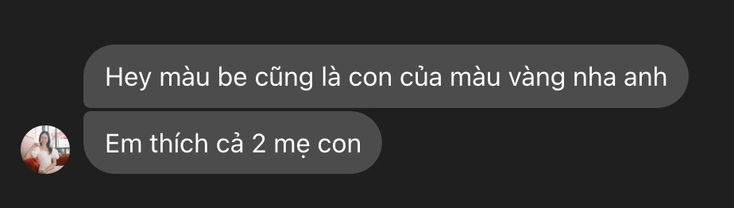

mà anh cũng leave behind cái clue này
clue hồi nãy dễ quá, clue này khó hơn nha
hôm qua anh mặc áo màu này mà em chê
 giờ anh trốn ở quán này có tên màu này
quán bày bán treat này em cũng uống thường, rồi sau khi trộn vô sữa thì thành màu này thì phải để giải câu đố này...
Klaudia có thân người già nào không?
này đời cũ quá em có tìm cách thành công được hông?
Tìm anh ở chỗ này nha:
8726 4864 326
Hint: